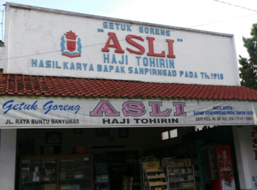

Pertama-tama kupas singkong kemudian buang sabutnya , lalu dipotong-potong dan direbus hingga matang
Setelah itu iris halus gula jawa lalu tambahkan sedikit air , kemudian rebus hingga gula melumat dan tercampur dengan air
Saat panas-panas lumatkan singkong dan beri gula sedikit demi sedikit sampai tercampur dengan rata
Letakan getuk singkong di atas nampan kemudian ratakan dengan tebal 2 centi meter kemudian dipotong kotak-kotak dengan ukuran 5x4 centi meter atau menurut selera , lalu sisihkan
Selanjutnya campurkan tepung terigu , tepung beras , garam , serta air secukupnya hingga adonan menjadi cukup kental ( sangrai )
Lalu panaskan minyak lalu celupkan getuk ke dalam adonan terigu sebelum terjadi proses penggorengan
Jika sudah dicelupkan ke adonan terigu goreng getuk singkong kedalam minyak yang cukup panas hingga warna berubah menjadi kekuning kuningan , angkat dan tiriskan
Getuk goreng sokaraja siap dinikmati
Tempat Getuk Goreng Sari Asli

Alamat: Jl. Jenderal Sudirman, Purwokerto Kulon, Sokaraja, Kabupaten Banyumas, Jawa Tengah 53141
Untuk informasi lain bisa hubungi di nomor telepon: 08164899355 Harga dan menu: